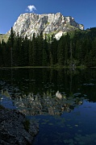
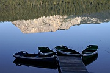
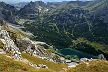
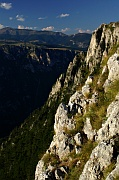

Disclaimer: These pages are not actively maintained, and some of the practical information on the site is out of date. I am working on a new version of the site that will focus more on my photos and memories of travel in Southeast Europe, and less on practical details that too easily become obsolete. In the meantime, please treat the information here with caution.
Jablan Jezero

Zminje Jezero

Crno Jezero
Durmitor National Park
The northern part of Montenegro is less visited than the coastal strip, and takes a bit of effort to get to, but it contains two of the most memorable landscapes in the Balkans. "In the Balkans", did I say? Those who love the region would be more likely to say "in the whole of Europe" - and for what it's worth, I happen to agree with them. Near the mountain resort of Žabljak a rolling green plateau abruptly gives way to the soaring peaks of the Durmitor massif, perfectly complemented by the plunging depths of the Tara Canyon.
Žabljak is an unremarkable town in itself, but its location at an altitude of 1450m means it is perfectly placed for visiting both of these scenic delights. Whether you get your kicks from peak-bagging, rafting, or just lazing around beside glassy mountain lakes, if you like the outdoors you'll love Durmitor. The area is refreshingly unspoiled - although there is some skiing in winter, the skiing paraphernalia is restricted to a small area, and in the centre of the range there is almost no visible sign of human activity. The summer hiking season seems to be quite short. I visited in early September; there were quite a few people around at the weekend, but during the week the entire National Park seemed to be populated by just me and a handful of Czech and Polish hikers.
The region has a scattering of glacial lakes, each one with its own personality. The largest and most visited is Crno Jezero (Black Lake), a short walk or drive west of Žabljak. The lake is dominated by the rocky peaks of Durmitor on one side, and deep forest on the other; an easy path along the shore allows you to appreciate it from all angles. The lakeside restaurant is a good place to replenish your energies after a long day in the hills, or just to while away an afternoon. Although it's a popular spot by Durmitor standards, it's still a peaceful place - get there early in the morning to have it all to yourself. Despite the name the waters take on a variety of colours throughout the day. The lakes sometimes splits into two when water levels are at their lowest. A little deeper in the forest, Zminje Jezero (Snake Lake) is smaller, stiller, and darker than Crno Jezero, and a popular picnic spot.
Hiking in Durmitor
I have briefly outlined a few possible walks here; see the Information section of this page for suggestions if you want to research the subject in more depth.
The varied relief of Durmitor means there is a wide range of hikes suitable for various weather conditions and levels of ability. You may doubt this when you first arrive in Žabljak. At first sight Durmitor looks like a forbidding wall of rock punctuated at intervals by even more intimidating needles, accessible only to serious mountaineers. While it's true that peaks such as Bobotov Kuk (2523m) should not be tackled lightly, there are plenty of opportunties for less challenging walking. Because of the relatively small size of the range, and the high starting altitude at Žabljak, it is possible to reach many of the peaks and return in a single day. Compared to the Julian Alps, for example, Durmitor has relatively few hikers' hostels in the mountains themselves.

Two views from Planinica
Most trails in Durmitor begin at Crno Jezero, which is itself a 40-minute walk from Žabljak. Jablan Jezero, another of the glacial lakes, is about 1.5 hours' walk from Crno Jezero and makes a good target for a fairly easy half-day hike. The trail passes through some lovely meadows before descending to the green waters of the lake, perfectly framed and sheltered by the sheer cliffs of Crvena Greda. It's a tranquil place in which to relax, but if you are feeling energetic you could turn this into a full day hike by following the trail that leads up to the top of Crvena Greda (2175m). It's not nearly as difficult as it might appear from below, and there are great views down to the lake on the way up, and into the heart of the mountains from the top.
I particularly enjoyed a long day spent hiking to Planinica and back. The trail passes through stately forests before following the Ališnica Valley, a long glaciated valley with wonderfully varied scenery; just when you think you have reached a zone of complete desolation, you may find yourself admiring a group of sleek horses drinking from peaty pools. There are quite a few cattle living up here too. I felt that I had strayed into a Far Side cartoon when the herd noticed me intruding into their domain and embarked on a long uphill trek to intercept me - apparently for the sole purpose of licking my rucksack.
At 2330 metres Planinica is only a couple of hundred metres lower than Durmitor's highest peaks, but it is quite different in nature. It is more of a plateau than a summit, and its gently rounded slopes make for a straightforward ascent via a good path, requiring plenty of energy but no mountaineering skills; it takes about four hours to get there from Crno Jezero. The drama lacking in the peak itself is amply supplied by the surrounding panorama. To the west, at the foot of an almost sheer 600 metre drop, are the blue-green depths of the Škrčko Lakes. To the south, the highest peaks in Durmitor seem almost close enough to reach out and touch; while to the north the Tara Canyon can be seen cutting its way through the plateau. The only problem with this place is that it is almost impossible to drag yourself away. The mountain hostel in the Škrčko valley is clearly visible from Planinica - if you have confirmed that it is open you can continue westward and finish your hike there. Otherwise it's a three hour walk back to Crno Jezero.
Ališnica Valley
I experienced five consecutive days of dry, clear weather in Durmitor, but judging by other travellers' stories I may have been exceptionally lucky. The region has a reputation for changeable weather, even by the standards of high mountain ranges, so come equipped. Even if you don't plan any serious hiking, be prepared for the cold nights in Žabljak.
The Tara Canyon
The peaks of Durmitor are visible wherever you go around Žabljak, but the region's other major attraction is almost invisible until you stumble upon it. The immense chasm of the Tara River passes a short distance to the north of the town.
The most popular way to visit the canyon is on an organised rafting trip - indeed this is the only way to see many parts of the almost roadless gorge. These trips are advertised by agencies in Žabljak, and anywhere else in Montenegro that attracts tourists.

The Tara Canyon, from Ćurovac
Much less widely promoted is the fact that you can see the canyon from above, on your own, for free. There are wonderful views from a place called Ćurovac, a small rise located 6km to the north of Žabljak. A small rise, that is, approaching from the south; its northern flank plunges 1100 metres to the river. Also visible far below are the scattered houses and fields of Trepca, one of the few settlements within the canyon itself. You can get to Ćurovac by following a minor road towards Trepca. Given the lack of signposting and the high probability that there won't be anyone around to give directions, it is handy to have a good map (see below), although if you keep heading north and slightly west you will certainly hit the canyon edge eventually. After about an hour and a half of flat walking you should see a sign to a viewpoint (vidikovac) - if you are driving or taking a taxi this is the place to start walking. It's only a few more minutes through the forest to the viewpoint. If you can drag your eyes away from the hypnotic views of the canyon for a moment, you can plot a different return route through the meadows.
Practicalities
Most visitors to Durmitor stay in Žabljak, where the accommodation options include several vast socialist-era hotels, plenty of private rooms for rent, and a campsites. You'll also find a small supermarket, a few restaurants serving hearty meals, an internet cafe, and probably the highest ATM in the Balkans. The National Park information centre is between the town and Crno Jezero. It feels almost deserted outside the short tourist season, so you may want to bring a good book to read during the cold upland nights.
Žabljak is an out-of-the-way place - whether you are driving yourself or on public transport, don't expect to be on the trails a couple of hours after getting off a flight. The most frequent bus connections are to Nikšić, three hours to the south through wonderful scenery. When I visited, three of these buses continued to Podgorica (one hour extra), and one of them went on to Budva and Kotor on the coast. If you happen to get a bus that only goes as far as Nikšić, you'll have no problem finding a connection to Podgorica.
For many people it may be more convenient to approach Durmitor from Serbia. The number of bus services on the Belgrade-Užice-Žabljak route depends on the time of year. In early September 2006 there were four daily, including an overnight service. If you travel from Belgrade at night, try to wake up in time to see the crossing of the Tara Canyon at Djurdjevica Tara. In theory it is possible to get a train to Mojkovac on the Belgrade-Bar line, which would leave you with a much shorter bus journey. However when I visited there was no direct bus, so it would have been necessary to wait for a connection at Djurdjevica Tara - a direct bus is probably more convenient.
Further Information
If your hiking plans include anything more ambitious than pottering around in the foothills, I suggest getting hold of a guidebook called Durmitor and the Tara Canyon by Branislav Cerović. Available from the National Park information office, it includes detailed descriptions of a variety of hiking routes, rated by degree of difficulty, and is accompanied by a 1:25000 map of the main part of the mountains. A larger map, available separately, covers a wider area including the Tara Canyon. You might also want to see if you can find a more recent map, as the guide and map are more than twenty years old. The feels quite appropriate in Žabljak, which seems to be stuck in an early eighties time warp, but there have been some changes in the area close to the town, mostly due to the development of skiing infrastructure. Higher trails don't seem to have changed much, and most are well marked in any event.
For further information check out the sites listed on the Montenegro Links page. The pages on SummitPost are particularly recommended if you are planning a hiking trip to the area. The Cicerone Guide describes a number of multi-day hikes in the range.
More photos of Durmitor in my Montenegro Galleries